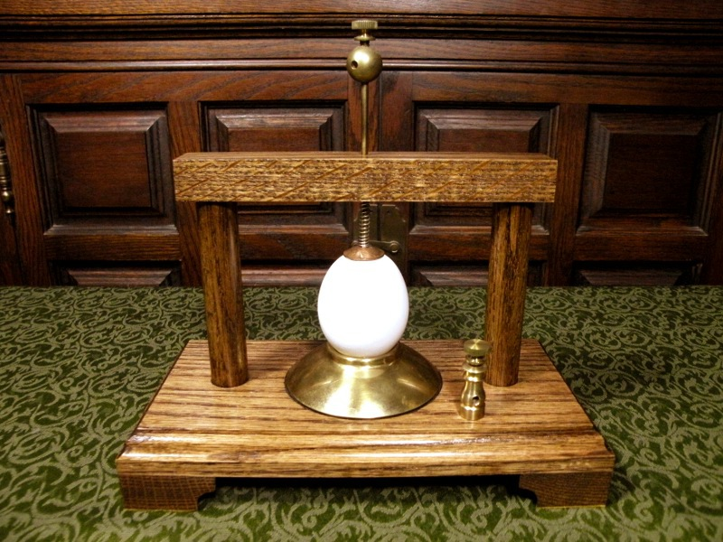

Egg Illuminator Egg Illuminator
Egg Illuminator Egg IlluminatorThe nineteenth century was a period of fervored electrical exploration. Natural philosophers of the day passed electrical discharges through anything they could lay their hands on, just to observe the results. One of the more visually impressive demonstations was the glowing egg.
I saw an "egg illuminator" device in a collection of antique physics apparatus and decided to make my own. The 10,000 volt transformer I use to power my Jacob's ladder works well. When the current passes through the eggshell, it glows an eerie orange. To prove that the electricity was passing through the shell and not the egg, I drilled two small holes and forced the egg out of one hole by blowing through the other. The evacuated egg glows the same as one complete. In fact, the empty egg is more reliable: The electrical connection to the surface of the shell is poor, and so it arcs from the electrodes to the eggshell. This microarc will eventually burn holes in the shell. Once pierced, the egg, which is rather more conductive, provides a better path for the current, ceasing the glow.
Created by Sean Corron, April 2, 2011.